Background
The backbone of the InVEST Schistosomiasis tools is recreating the production functions presented in Waltz et al., 2015. The underlying mechanistic model create a habitat suitability index based off remotely sensed habitat variables in a users area of interest. The relationship between some of these parameters and the habitat suitablity can be changed by the user in the InVEST workbench, others the users can define.
To get started the inputs needs to be in a project folder. Details on how to build these inputs for yourself are in future tutorial link. For the purpose of this tutorial we are going to use the Senegal sample data available on Google Drive in senegal_inputs.zip. Download and unzip the file to your project folder. More details on how to download and unzip are provided in Running sample models. For this tutorial you don’t need the invest_schistosomiasis_senegal_datastack folder or to load the .json file as described in the other tutorial. We are going to specify the parameters ourselves and create our own .json run files.
Workbench

When first opened the Schistosomiasis plugin looks like this. Each of the red boxes require an input from the user. Short descriptions of these are provided by clicking the 🛈 icons. Details on how to fill the red boxes and the underlying functions are detailed below.
Workspace (directory)
The workspace is the folder where all the model’s output files will be written. If this folder does not exist, it will be created. If data already exists in the folder, it will be overwritten.
Click the folder icon, then navigate to where you want the model to be saved. In the screenshot I am saving it to a folder called senegal_example_inputs. Click Select Folder and the box will now contain the path to that folder.
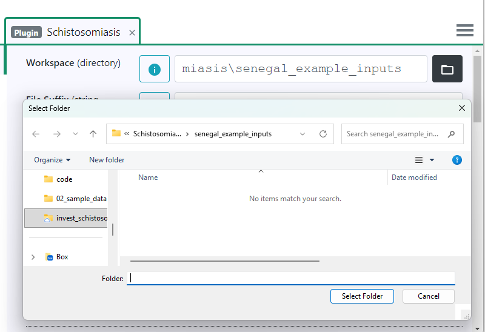
File Suffix (string, optional)
Option to add a suffix to model outputs to help keep track of different run. I’m using today’s date as a sting YYYYMMDD (20260205) so the runs will be saved in order.
Area Of Interest (vector)
The Area of Interest (AOI) is a polygon of the area where you want the predictions and have the input data. For this example the AOI is the Senegal River Basin and the shapefile was provided in the senegal_inputs folder downloaded from Google Drive.
Click the folder icon, navigate the senegal_inputs/projected_sen_aoi.gpkg, and click Open. Use this same process to load all of the files described below.
Here is what the AOI for the Senegal River Basin sample data looks like.
Max decay distance (number) (m)
The maximum threat distance from water risk in meters The risk decays 1 \(\to\) 0 from 1km from water to the input max distance to water value linearly. How far from water do you expect a population to be impacted?
The function for proximity to water was based on a combination of literature and expert opinion. Households near schistosome-containing water bodies tend to have higher schistosomiasis prevalence than those far away (Huang and Manderson 1992). This relationship has been studied in Kenya, Ghana and Brazil and summarized into four risk categories based on a residence’s proximity to freshwater: very high (<100 m), high (101-500 m), low (501-1,000 m) and very low (1,001-2,000 m) (Ajakaye et al. 2017). Based on field experience, people living in the arid Senegal River Basin travel farther to water (personal communication with Giulio De Leo and Andy Chamberlin), so the risk categories at this site were scaled up to: total (<1 km), linearly declining (1-15 km), and negligible (>15 km). This categorization is supported by a study in Kenya which found no correlation between proximity and prevalence for schools within 1 km of water (Nagi et al. 2014).
Essentially, in northern Senegal surface water is quite limited (Sahel Desert) so we expect people to travel quite far to access water points. Therefore, 5 km (5000m) is a reasonable estimate for maximum distance (max decay distance = 5000).
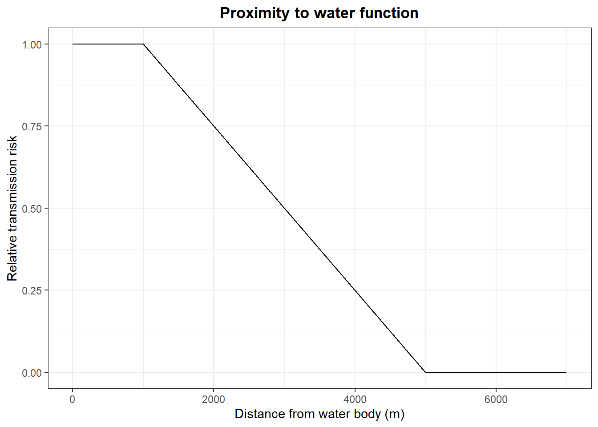
Water Presence (raster)
A raster indicating presence of water called senegal_inputs/projected_basin_water_mask_nodata_sen.tif in the sample data. The water mask data here is based on Andy add citation and shows water presence/absenece in 30x30 meter pixels. The water mask is potentially the most important part of the model as risk will be underestimated for an area if the water presence raster indicates there is no water, but in truth small water bodies are present. Notice in the plot the Senegal river, which runs along the Mauritania-Senegal boarder and Lac de Guiers are clearly shown.
I can change this to be interactive so the user and zoom in and see small water pixels
Population
Population Raster (raster) (m)
Why is there an “m” in this title?
A raster representing the number of inhabitants per pixel called senegal_inputs/population_count_projected.tif. The population data in this tutorial is from Andy add citation and shows the population estimates in ~1km pixels from YEAR. The population estimates are used to estimate the convoluted/population at risk estimates. It’s a bit hard to see because most of Senegal has a low population density, but Saint Louis (coast directly left of AOI) has a much higher population estimate.
pbase +
geom_spatraster(data=popu)+
scale_fill_fermenter(na.value = "transparent")+
geom_spatvector(data=aoi, color="red", fill="transparent", lwd=1)+
geom_text(aes(x=(xmin(aoi)+7e4), y=ymin(aoi)+5e4, label="AOI"), size=8)+
labs(fill="population")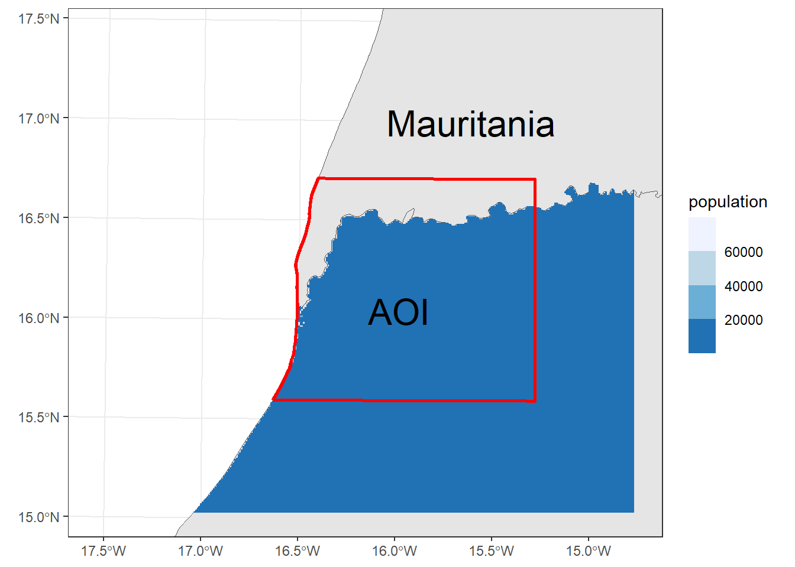
Use Default Population Suitability (optional)
population is misspelled!
Slide bar with the option to Use the Default Population Suitability (slide right) or input your own function (slide left). The default option is a linear increase in risk to rural max and an s-curve decrease in risk from rural max to urbanization max.
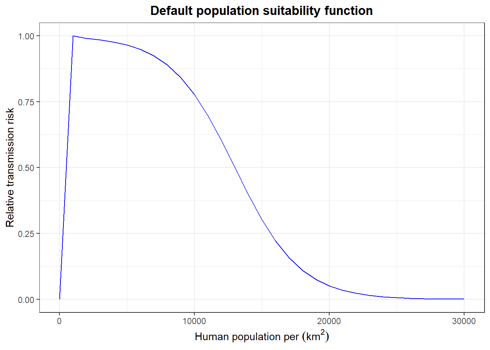
If the default is used the next two options are Rural Population Max and Urbanization Population Max. 
For the tutorial use Rural Population Max = 1000 and Urbanization Population Max = 25000. These values are based on at what respective population density you expect risk to be highest (1; rural) and lowest (0; urban). Andy confirm this: We estimated these values based on our local knowledge of at what population density transmission is highest before WASH measure are implemented and our estimate at which population density people are not exposed to surface water around their homes (e.g. city with piped water and plumbing).
Don’t Use Default Population Suitability (optional)
If the default option is not used the function and parameters need to be provided.

The Suitability Function Type needs to be defined for both Rural and Urbanization using the drop down menus. Then for each function various parameters need to be defined.
| function | rural | urban |
|---|---|---|
Linear |
Four points indicating the start (Xa, Ya) and end (Xz, Yz) of the line where Xa=min population size, Ya=risk at Xa, and Xz=max rural population size with the respective max risk (Yz, typically 1) |
same idea in reverse |
exponential |
Yin = …, Xmed=…, Decay_factor=…, Max_dist=… |
… |
scurve (sigmoidal) |
Yin=…, Yfin=…, Xmed=…, Inv_slope=… |
… |
trapezoid |
each is a point a=…, b=…, c=…, z=…, of the trapazoid |
… |
gaussian |
Mean=…, Std=…, Lb =…, Ub =… |
… |
Here I completely don’t understand how the trapezoid would work / how two linear functions are different from a trapezoid
helpful to add some plots here explaining more?
## linear
data.frame(h = c(0, 100),
y = c(0, 1),
lab = c("(Xa, Ya)", "(Xz, Yz)")) %>%
ggplot(aes(x=h, y=y)) +
geom_line(color="blue") +
geom_point() +
geom_text(aes(label=lab), position = position_nudge(x=c(5, -5))) +
labs(x=bquote("Human population per "(km^2)),
y="Relative transmission risk",
title="Linear") 
## exponential
Yin <- 100 #initial or intercept?
Xmed <- NA #inflection point?
Decay_factor <- 0.05
Max_dist <- 100
data.frame(h = seq(0, 100, by=1)) %>%
mutate(y = Yin * exp(-Decay_factor * h)) %>%
ggplot(aes(x=h, y=y)) +
geom_line(color="blue") +
labs(x=bquote("Human population per "(km^2, h)),
y="Relative transmission risk",
title="Exponential",
subtitle = bquote(Y==Yin%.%e^"Decay_factor*h"))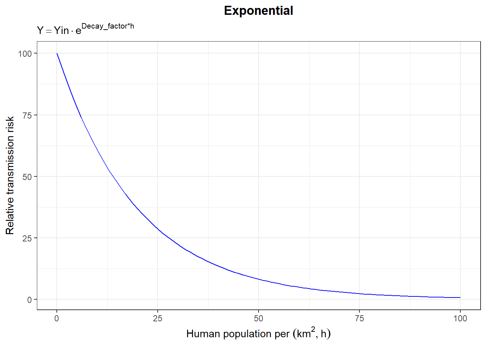
## scurve
Yin <- 100 #min?
Yfin <- 0 #max?
Xmed <- 50 #midpoint
Inv_slope <- 10/(Yfin - Yin) #k?
data.frame(h= seq(0, 100, by=1)) %>%
mutate(y = 1/(1 + exp(Inv_slope * (h - Xmed)))) %>%
ggplot(aes(x=h, y=y)) +
geom_line(color="blue") +
geom_vline(xintercept = Xmed, lty=2) +
geom_text(aes(x=Xmed+5, y=1, label="Xmed"))+
labs(x=bquote("Human population per "(km^2, h)),
y="Relative transmission risk",
title="Scurve",
subtitle = bquote(Y==1/{1 + e^{"Inv_slope" %.% (h - Xmed)}}*" ; Inv_slope = 10/(Yfin-Yin)"))Warning in geom_text(aes(x = Xmed + 5, y = 1, label = "Xmed")): All aesthetics have length 1, but the data has 101 rows.
ℹ Please consider using `annotate()` or provide this layer with data containing
a single row.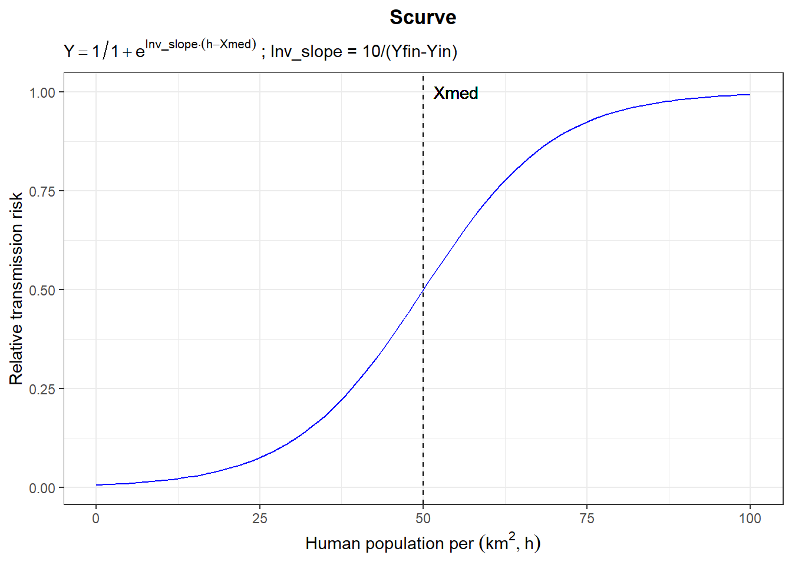
## trapazoid
data.frame(x = c(0, 40, 60, 100),
y = c(0, 0.5, 1, 0.5),
lab = c("a", "b", "c", "z")) %>%
ggplot(aes(x=x, y=y)) +
geom_line(color="blue") +
geom_point() +
geom_text(aes(label=lab), position = position_nudge(x=c(5, -5))) +
labs(x=bquote("Human population per "(km^2)),
y="Relative transmission risk",
title="Trapezoid")
## gaussian
my_mean <- 50
my_sd <- 20
Lb <- 20 #lower bound?
Ub <- 80
data.frame(h= seq(0, 100, by=1)) %>%
arrange(h) %>%
mutate(y = pnorm(h, mean=my_mean, sd=my_sd),
y = case_when(h <= Lb ~ 0,
h >= Ub ~ 1,
TRUE ~ y)) %>%
ggplot(aes(x=h, y=y)) +
geom_line(color="blue") +
geom_vline(xintercept = c(Lb, Ub), lty=2) +
geom_text(aes(x=Lb+2, y=1, label="Lb"))+
geom_text(aes(x=Ub-2, y=0.2, label="Ub"))+
labs(x=bquote("Human population per "(km^2, h)),
y="Relative transmission risk",
title="Gaussian")Warning in geom_text(aes(x = Lb + 2, y = 1, label = "Lb")): All aesthetics have length 1, but the data has 101 rows.
ℹ Please consider using `annotate()` or provide this layer with data containing
a single row.Warning in geom_text(aes(x = Ub - 2, y = 0.2, label = "Ub")): All aesthetics have length 1, but the data has 101 rows.
ℹ Please consider using `annotate()` or provide this layer with data containing
a single row.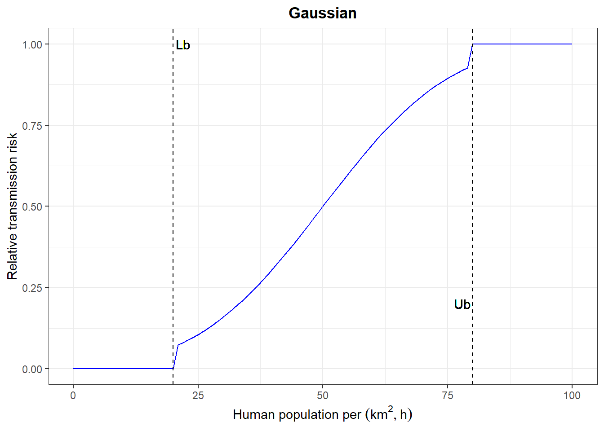
Calculate Water Depth (optional)
Water depth is calculated using the water presence raster input and water distance from shore as a proxy for depth.
For the tutorial we are going to Enable this (slide to right) then fill in the Water Depth Risk Weight (ratio: a decimal from 0-1) = 1. The weight this factor should have on overall risk.
The funtion for water depth uses the distance from shore as a proxy for depth. We may need to address why this function dips to y=0 at x=2000 but then rises to y=0.088 for values of x>2000..
data.frame(shoredist = seq(0,3000, by=1)) %>%
mutate(water_depth = case_when(shoredist<=210 ~ -0.0043*shoredist+1,
shoredist<=2000 ~ -0.000056*shoredist + 0.088,
TRUE ~0)) %>%
ggplot(aes(x=shoredist, y=water_depth)) +
geom_line()+
labs(x="Horizontal shore distance (m)",
y="Relative suitability",
title="Relative risk of water depth by shore distance")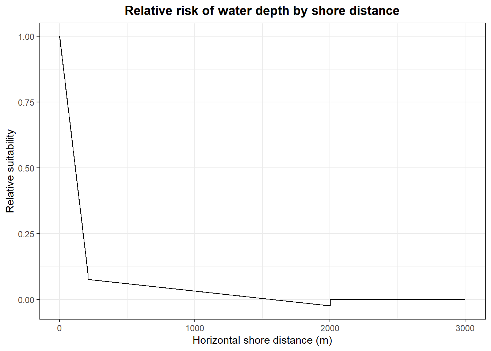
Calculate Water Temperature (optional)
Enable and so that water temperature effects are calculated. Now rasters of the dry season (senegal_inputs/projected_habsuit_waterTemp_dry_2019_sen.tif) and wet season (senegal_inputs/projected_habsuit_waterTemp_wet_2019_sen.tif) temperature and weight these should have on overall risk (Snail Water Tempertarue [Dry/Wet] Risk Weight).
Dry/Wet Season Temperature Raster (raster)
Rasters of air temperature in °C during the dry and wet seasons. These are called senegal_inputs/projected_habsuit_waterTemp_dry_2019_sen.tif and senegal_inputs/projected_habsuit_waterTemp_wet_2019_sen.tif respectively.
ggplot() +
geom_spatraster(data=temp_dry_wet)+
scale_fill_fermenter(na.value = "grey90")+
facet_wrap(~lyr)+
labs(fill="Water temp")<SpatRaster> resampled to 500490 cells.
hist(temp_dry_wet)Warning: [hist] a sample of 0% of the cells was used (of which 99% was NA)
Warning: [hist] a sample of 0% of the cells was used (of which 99% was NA)
For the Senegal 2019 data we chose to estimate water depth based on the minimum and maximum water extent (number of water pixels across the 37-year composite). We used monthly water extent from JRC Monthly Water History v1.3 for a composite of 37 years from 1984 to 2021 because it is both open-source and accurate. Based on this we determined the best month to represent each season:
- May to represent the dry season. (Although March and April have lower precipitation, May has the lowest water extent. June is the first month with low but significant rainfall.)
- October to represent the wet season. (Although September has the highest precipitation, October has a slightly higher water extent.)
To avoid overestimation of water extent based on anomamlous years, the mask will include pixels that have had water in at least five of the past 37 years.
Snail Water Temp Dry & Wet Risk
A ratio [0,1] of the temperature associated risk to snails in the dry and wet seasons.
For the tutorial set both of these to 1.
Snail Suitabililty Function Types
Here is where you choose the snail of interest and thus which species of Schistosoma the model is for. Remember Bulinus truncatus \(\to\) S. haematobium and Biomphalaria \(\to\) S. mansoni. The different snail genera have different thermal envelopes thus this will change the risk-temperature relationship. Alternatively, a function (linear, exponential, scurve, trapazoidal, gaussian) with the parameters decribed above can be used.
Again, set the Risk weight in the model for these parameters to 1.
For the tutorial chose Default: Bulinus truncatus and Default: S. haematobium.
The two snail temperature production functions in Waltz et al., 2015 are problematic because they do not have a maximum suitability of 1. Because we have an separate function for scalling down the impact of water temperature (Risk) we revised the function to not scale the effect twice. We based the revised temperature effects on the snail mortality reported in the original sources: Pflüger 1980 for Bimophalaria and Pflüger et al. 1984 for Bulinus.
Biomphalaria temperature production function: \[ \text{Value} = \begin{cases} 0 & \text{if } Temp < 16 \\ -29.9111 + 5.015Temp + -0.3107Temp^2 +8.560e^{-03}Temp^3 + -8.769e^{-05}Temp^4 & \text{if } 16 \le Temp \le 35 \\ 0 & \text{if } Temp > 35 \end{cases} \]
data.frame(Temp=seq(10,40, by=1)) %>%
mutate(y=case_when(Temp<16 ~ 0,
Temp<=35 ~ -29.9111 + 5.015e+00 * Temp + -3.107e-01 * Temp^2 +8.560e-03 * Temp^3 + -8.769e-05 * Temp^4,
TRUE ~ 0)) %>%
ggplot(aes(x=Temp, y=y))+
geom_line()+
labs(title="Biomphalaria",
x="Water surface temp C",
y="Relative suitability")
Bulinus temperature production function: \[ \text{Value} = \begin{cases} 0 & \text{if } Temp < 17 \\ -48.173 + 8.534 * Temp + -0.5568 * Temp^2 + 1.599e^{-02} * Temp^3 + -1.697e^{-04} * Temp^4 & \text{if } 17 \le Temp \le 33 \\ 0 & \text{if } Temp > 33 \end{cases} \]
data.frame(Temp=seq(10,40, by=1)) %>%
mutate(y=case_when(Temp<17 ~ 0,
Temp<=33 ~ -48.173 + 8.534e+00 * Temp + -5.568e-01 * Temp^2 + 1.599e-02 * Temp^3 + -1.697e-04 * Temp^4,
TRUE ~ 0)) %>%
ggplot(aes(x=Temp, y=y))+
geom_line()+
labs(title="Bulinus",
x="Water surface temp C",
y="Relative suitability")
S. mansoni temperature production function: \[ \text{Value} = \begin{cases} 0 & \text{if } Temp < 16 \\ -0.003 \left(\frac{268}{Temp - 14.2} - 335\right) + 0.0336538 & \text{if } 16 \le Temp \le 35 \\ 0 & \text{if } Temp > 35 \end{cases} \]
data.frame(Temp=seq(10,40, by=1)) %>%
mutate(y=case_when(Temp<16 ~ 0,
Temp<=35 ~ -0.003 * (268/(Temp - 14.2) - 335) + 0.0336538,
TRUE ~ 0)) %>%
ggplot(aes(x=Temp, y=y))+
geom_line()+
labs(title="S. mansoni",
x="Water surface temp C",
y="Relative suitability")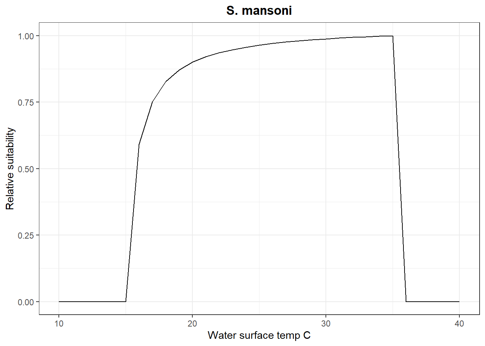
S. haematobium temperature production function \[ \text{Value} = \begin{cases} 0 & \text{if } Temp < 17 \\ -0.006 \left(\frac{295}{Temp - 15.3} - 174\right) + 0.056 & \text{if } 17 \le Temp \le 33 \\ 0 & \text{if } Temp > 33 \end{cases} \]
data.frame(Temp=seq(10,40, by=1)) %>%
mutate(y=case_when(Temp<17 ~ 0,
Temp<=33 ~ -0.006 * (295/(Temp - 15.3) - 174) + 0.056,
TRUE ~ 0)) %>%
ggplot(aes(x=Temp, y=y))+
geom_line()+
labs(title="S. haematobium",
x="Water surface temp C",
y="Relative suitability")
Calculate NDVI (optional)
Enable and so that NDVI effects are calculated. Now rasters of the dry season (senegal_inputs/projected_habsuit_NDVI_dry_2019_sen.tif) and wet season (senegal_inputs/projected_habsuit_NDVI_wet_2019_sen.tif) NDVI and weight these should have on overall risk (Snail Water Tempertarue [Dry/Wet] Risk Weight).
ggplot() +
geom_spatraster(data=ndvi_dry_wet)+
scale_fill_fermenter(na.value = "grey90")+
facet_wrap(~lyr)+
labs(fill="NDVI")<SpatRaster> resampled to 500490 cells.
hist(ndvi_dry_wet)Warning: [hist] a sample of 0% of the cells was used (of which 99% was NA)
Warning: [hist] a sample of 0% of the cells was used (of which 99% was NA)
Suitability Function Type
Use Default used in paper. Which looks like this.
data.frame(V = seq(-1,1, by=0.1)) %>%
mutate(veg_coverage = case_when(V<0 ~ 0,
V<=0.3 ~ 3.33*V,
TRUE ~1)) %>%
ggplot(aes(x=V, y=veg_coverage)) +
geom_line() +
labs(title = "Vegetation coverage function",
x="Normalized difference vegetation index (NDVI)",
y="Relative suitability")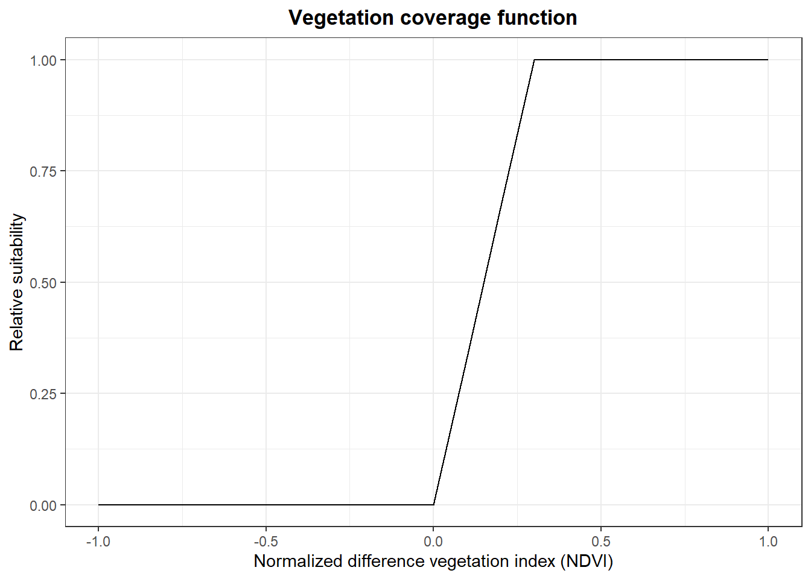
The user can also specify custom functions using the same parameters as described above.
NDVI Dry/Wet Risk Weight (ratio: a decimal from 0 -1)
For the tutorial use 1 for both.
Calculate Water Velocity
For the tutorial Disable e.g., don’t slide this to the right.
If enabled the Default used in paper looks like this. Or the used can manually specify a function.
data.frame(river = seq(0,10,by=1)) %>%
mutate(river_order = -(1/9)*river + (10/9)) %>%
ggplot(aes(x=river, y=river_order))+
geom_line()+
labs(title="River order function",
x="River order from HydroSheds",
y="Relative suitability")
[Where does the stream order function fit in here?]{style: “color: red;”}
data.frame(river = seq(0,7,by=1)) %>%
mutate(river_order = 0.143*river) %>%
ggplot(aes(x=river, y=river_order))+
geom_line()+
labs(title="Stream order function from (Walz et al 2015)",
x="Stream order from ASTER GDEM",
y="Relative suitability")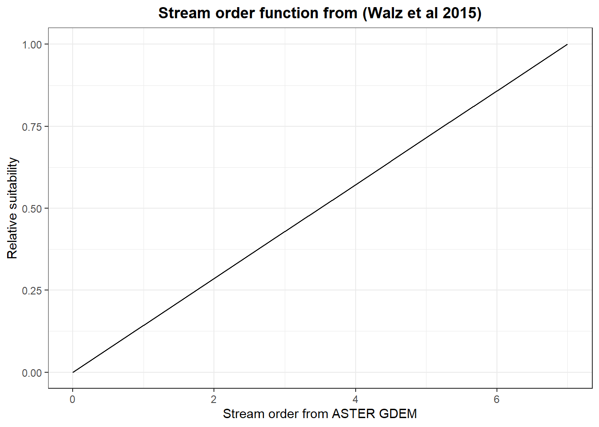
The Risk Weight will also need to be specified.
Method for calculating the flow velocity in “water”: use the WWF Hydrosheds Free-Flowing Rivers Network in Google Earth Engine to determine the stream lines (flow velocity only). Do an operation to assign each raster pixel in the water mask the flow-velocity value of the nearest Hydrosheds pixel.
Method for calculating the flow velocity and stream order in “potential water”: use the WWF Hydrosheds Free-Flowing Rivers Network in Google Earth Engine to determine the stream lines (both flow velocity and stream order). Remove (set to N/A) the areas within the water mask.
HydroSheds variables in Google Earth Engine are listed here.
Walz et al. 2015 relied on Strahler Stream Order (see Beck-Wörner et al 2007), which is based on a numbering system from the headwaters to the mouth, and retrieved data from the topographic drainage lines derived from ASTER GDEM. However, we think it’s better to use HydroSheds River Order, which is based on average discharge.
We disable this function in the tutorial for Senegal because we think this function might hold true only in environments with hills and mountains, like Cote d’Ivoire, where it was developed. We’re not sure why headwaters would be less suitable than the river mouth in a flat environment like Western Senegal where the headwaters in Senegal might be suitable for snails [(e.g. seepages in Mali).]{style: “color: red;”}
data.frame(river = seq(0,10,by=1)) %>%
mutate(river_order = -(1/9)*river + (10/9)) %>%
ggplot(aes(x=river, y=river_order))+
geom_line()+
labs(title="River order function",
x="River order from HydroSheds",
y="Relative suitability")
[Where does the stream order function fit in here?]{style: “color: red;”}
data.frame(river = seq(0,7,by=1)) %>%
mutate(river_order = 0.143*river) %>%
ggplot(aes(x=river, y=river_order))+
geom_line()+
labs(title="Stream order function from (Walz et al 2015)",
x="Stream order from ASTER GDEM",
y="Relative suitability")
Additional User Defined Suitability Input. (optional)
These sections allow the user to define additional suitability functions.
Disable for the tutorial.
Run
Now you are ready to run the model by clicking the blue Run button (1). Which shows a blank screen for a bit (2) then starts showing lots of updates (3). 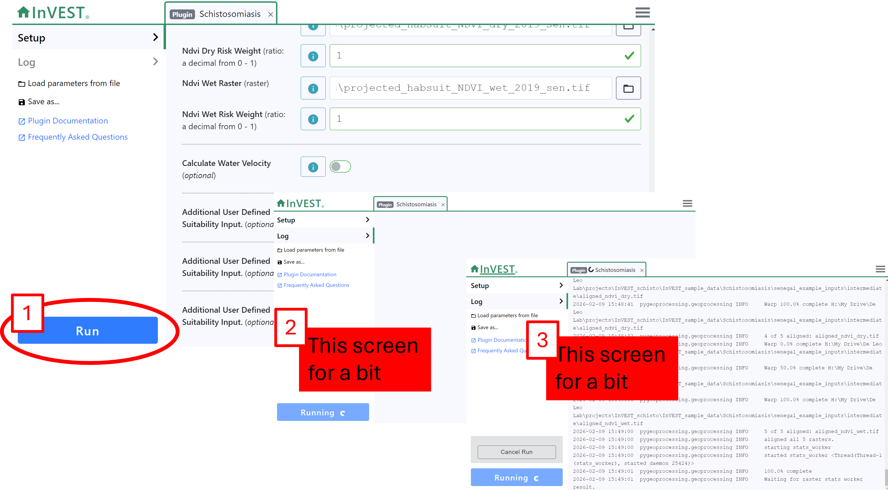
Once that is done all of the results and input layers appear in the specified workspace. See them by either navigating to the folder in your file browser or using the shortcut provided by clicking Open Workspace (1) which will open the specified workspace folder in your file browser (2) 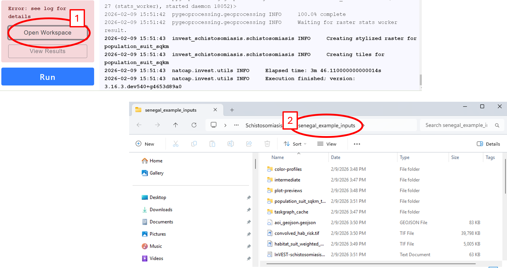
We will cover what all these files are in the [next tutorial]{style: “color= red;”}.
Optional save
You can also save the entire run, which will save a json file of the input paths which can be loaded as described in Tutorial_02. This is not necessary. You should be able to drag and drop that into the model. To do so click on “save as” in the left menu (1) and select Parameters only and Use relative paths (2) then click Save. This opens a new window where you can give the file a good name (4) and click Save. Back in the InVEST workbench you’ll see a brief archeiving message.

The run can then be loaded by (1) clicking load parameters from file, (2) click on the relevant .tzg folder with the name you gave it above, (4) click Open, (5) check you are in the folder above the folder with the files (in this case senegal_inputs) [only matters if you checked “relative paths” when you created the file], and (5) click Extract archeive here.

Now everything you previously input is loaded in the workspace.
Just the tutorial inputs please!
Everything called a “risk weight” is how important (e.g., relative weight) that parameter is in the model.
| Name | Description | Input |
|---|---|---|
| Workspace | file where results are saved to | “senegal_example_inputs” |
| File Suffix | if you want to save many interations of the model in the same folder add a suffix e.g. the date) | “20260205” |
| Area of Interest | shape file of the area you want to model | “senegal_inputs/projected_sen_aoi.gpkg” |
| Max decay distance | How far from water (meters) are populations impacted | “5000” |
| Water Presence | Binary raster of water features | “senegal_inputs/projected_basin_water_mask_nodata_sen.tif” |
| Population Raster | A raster representing the number of inhabitants per pixel | senegal_inputs/population_count_projected.tif |
| Default Population Suitability | Population densities suitable to transmission | “rural population max = 1000” “urbanization population max = 25000” |
| Calculate Water Depth | Function to estimate water depth based on dist. to shore | “Enable” “Risk weight = 1” |
| Calculate Water Temperature | Function to estimate water temperature suitability | “Enable” |
| Dry Season Temperature Raster | Raster of air temperature in the dry season | “senegal_inputs/projected_habsuit_waterTemp_dry_2019_sen.tif” |
| Wet Season Temperature Raster | Raster of air temperature in the dry season | “senegal_inputs/projected_habsuit_waterTemp_wet_2019_sen.tif” |
| Snail Water Temp Dry Risk Weight | “1” | |
| Snail Water Temp Wet Risk Weight | “1” | |
| Snail Suitability Function Type | Which snail species to model | “Default: Bulinus truncatus” |
| Parasite Water Temp Dry Risk Weight | “1” | |
| Parasite Water Temp Wet Risk Weight | “1” | |
| Parasite Suitability Function Type | Which snail species to model | “Default: S. haematobium” |
| Calculate NDVI | Include NDVI in the model | “Enable” |
| Suitability Function Type | default or user specified relationship with risk and NDVI | “Default used in paper” |
| NDVI Dry Raster | Raster of NDVI (0,1) during the dry season | “senegal_inputs/projected_habsuit_NDVI_dry_2019_sen.tif” |
| NDVI Dry Risk Weight | “1” | |
| NDVI Wet Raster | Raster of NDVI (0,1) during the wet season | “senegal_inputs/projected_habsuit_NDVI_wet_2019_sen.tif” |
| NDVI Wet Risk Weight | “1” | |
| Calculate Water Velocity | Function to estimate water velocity suitability | “Disable” |
| Additional User Defined Suitabilty Input | Allows user to add additional custom functions | “Disable” |
https://github.com/Bushytop/schisto_eeid/tree/main/data/natcap_invest https://colab.research.google.com/drive/1Gj8zyo4nE2ij10aNuoXjx3yiYCTGy5tR?usp=sharing#scrollTo=dylSqiUUwmA8 [7:52 AM]in particular, the parameters to use for consistency are: max decay distance: 5000 use default population suitability (enable) rural population max: 1000 urbanization population max: 25000 calculate water depth (enable) water depth risk weight: 1 calculate water temperature (enable) all risk weights set to 1 default snail and parasite suitability function types calculate ndvi (enable) default ndvi suitability function ndvi risk weight: 1 for both dry and wet water velocity disabled and no other functions defined